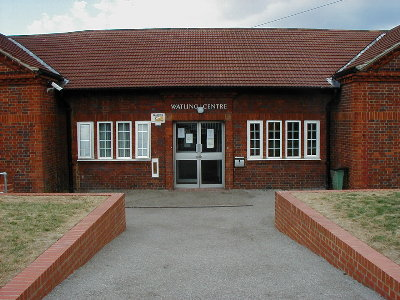
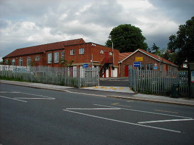

Who
we are
We are an amateur radio club covering Edgware, Burnt Oak and the surrounding areas.
Amateur radio is a hobby where we use radio equipment to make contact with other radio amateurs both locally and across the world.
What
we do
Meetings
We hold meetings from 8:00 PM - 10:00 PM on the 2nd and 4th Thursday of the month at the Watling Community Centre.
We normally meet in the room at the end of the long corridor - please just walk in, you will be most welcome.
On air nets
We also hold regular club nets jointly with our friends at the Radio Society of Harrow:
| Frequency | Time | Mode | |
|---|---|---|---|
| Every Monday | 145.375 MHz | 8:45 PM | FM |
| Every Wednesday | 145.350 MHz | 8:00 PM | FM |
| 1st & 3rd Thursday | 144.310 MHz | 9:00 PM | USB |
How to
find us
Location


We meet at the Watling Community Centre, 145 Orange Hill Road, Burnt Oak, Edgware, HA8 0TR.
By car
For those arriving by car, the entrance to the car park is in Deansbrook Road, near the roundabout where Orange Hill Road meets Deansbrook Road.
By public transport
The community centre is also served by local buses, or can be reached by a 15 minute walk from Burnt Oak Underground Station.
Accessibility
Access to the centre is step free. Accessible toilets are available.